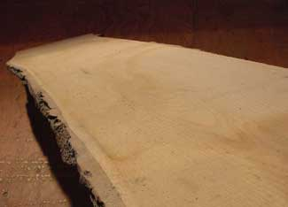

When I began working with wood 25 years ago, I bought lumber in the same places most people do - building supply yards. But it didn't take long for the high prices to bug me. I started thinking of all the middlemen between the forest and my workbench, and how I might cut them out of the deal and save money buying from small sawmills.
Most small mills are one- or two-person rural operations that you can’t see from the road. Some mills also are portable, traveling to wherever there are cut logs to saw. Start your quest by visiting rural hardware stores, farm co-ops and small-town building outlets. Everyone knows what his or her neighbors are up to when you get out of the city, and it won’t be long before you find what you’re looking for.
Next, learn to speak the language of the lumber trade. Operators talk in terms of “feet” of lumber. This is verbal shorthand meaning “board-feet” (bd. ft.) - a unit of wood volume equivalent to a piece of wood 12 inches wide by 12 inches long by 1 inch thick. In practice, the amount of wood can be made of any length, width or thickness, though the volume of a board foot remains constant at 144 cubic inches. Here’s a shortcut for calculating board feet of a piece of lumber: thickness (in inches) multiplied by width (in inches) multiplied by length (in feet), all divided by 12.
You’ll enjoy the most creative control over fine furniture projects if you have your lumber sawn “through and through.” Also called flitch cut, this term refers to sawing each log right through from one side to another, leaving bark on each edge. The grain from a neighboring piece can be matched this way, for better final project appearance.
Some people will tell you it’s necessary to artificially dry lumber in a kiln if you intend to use it for furniture. This isn’t true, as I’ve proven with more than 20 years of successful air-dried furniture projects. In fact, air-dried lumber is less brittle, more colorful and includes fewer hidden energy inputs.
The trick to turning your sopping wet sawmill purchases into great air-dried lumber is a two-part handling process. Because the moisture content of fresh-cut lumber can be as high as 30 percent, it’s necessary to stack it outdoors, with small strips of wood (called “stickers”) between layers for ventilation. The lack of air movement in an indoor setting causes wet wood to grow mold - a lesson I learned the hard way. Any sawmill will have thousands of board feet of lumber “stickered” like this in their yard. Much of it will be ready for the second phase of drying in your workshop. If it comes right off the mill, sticker wood in your backyard for four to six weeks.
You can use sticker-dried lumber for all kinds of structural uses, but if you want to build furniture, the moisture content needs to be down to 6 percent to 8 percent. In most parts of the continent, wood never gets this dry after being stored in an unheated space - no matter how long you leave it there. In order to get wood dry enough for cabinetmaking without a kiln, wood must spend time indoors, in a heated building, preferably during winter. This is the second drying phase. A hand-held moisture meter is a foolproof way of monitoring progress, but you can develop a feel for the process, too. In my experience, dry, winter indoor air will lower the moisture content of pine from about 16 percent to 8 percent in 6 weeks. The fastest air-drying process I completed was with 1-inch-thick pine. It went from the log to finished furniture in seven months, with no cracking or warping. It’ll take longer than this for hardwoods. You can speed secondary drying substantially by using a fan to blow air over the pile of wood.
For more information on cutting your own lumber and using it for building projects, read Profit with Portable Sawmills, Choosing Safe Lumber and Our Handmade Home.
Do you have experience cutting and drying your own lumber? Tell us about it in the comments section below.|
 STEVE MAXWELL Slicing through a tree lengthwise produces “flitch-cut” lumber with bark on two edges. |
|
|